Pellizco
Una librería de javascript para dar soporte a gestos de zoom con pellizcos.
Pesa 409 bytes minificado y comprimido con gzip.
Funciona en Node como módulo (ES2015 o CJS) o en el browser como un script (UMD).
En esto he estado trabajando.
Una librería de javascript para dar soporte a gestos de zoom con pellizcos.
Pesa 409 bytes minificado y comprimido con gzip.
Funciona en Node como módulo (ES2015 o CJS) o en el browser como un script (UMD).
Clon de Mortal Kombat.
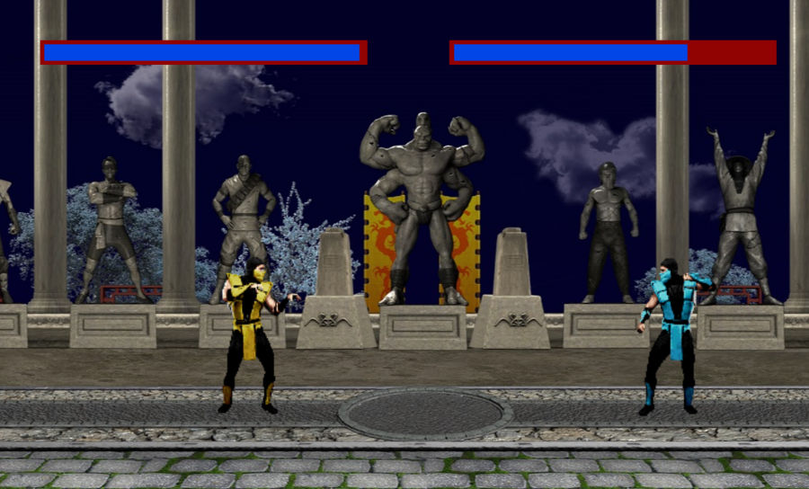Creado con tecnologías web (Javascript, Pixi.js y howler.js).
Plataforma de ejercicios interactivos para aprender Front End.
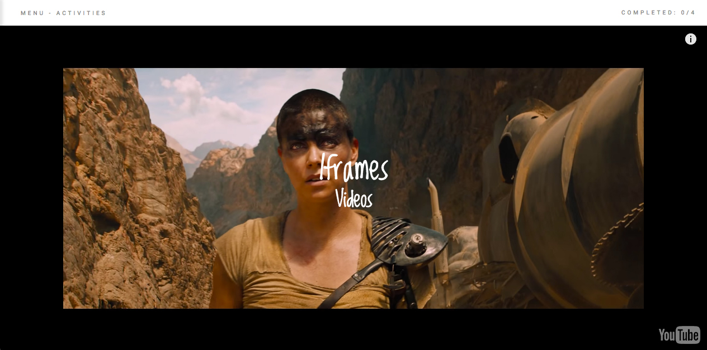Una librería ligera para Pruebas Unitarias.
Pesa 475 bytes minificado y comprimido con gzip.
Paquete del editor Atom.
Permite abrir con un click los links que se encuentren en comentarios.
Directiva para hacer two-way binding en Vue.js.
Two-way binding similar a v-model para elmentos que no son inputs.
Crea el estado de la aplicación a partir del contenido en el DOM (sin necesidad de APIs).
Tema para Hugo (generador de sitios estáticos).
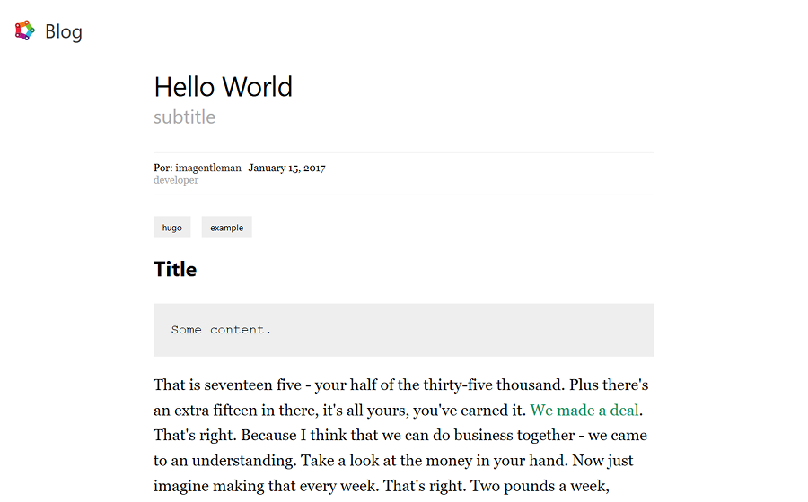Estilo minimalista enfocado en la legibilidad.
Responsive.
Rápido (hace loading, scripting, rendering y painting consistentemente en menos de 10ms).
Otro micro-framework front end usando ES6/ES2015.
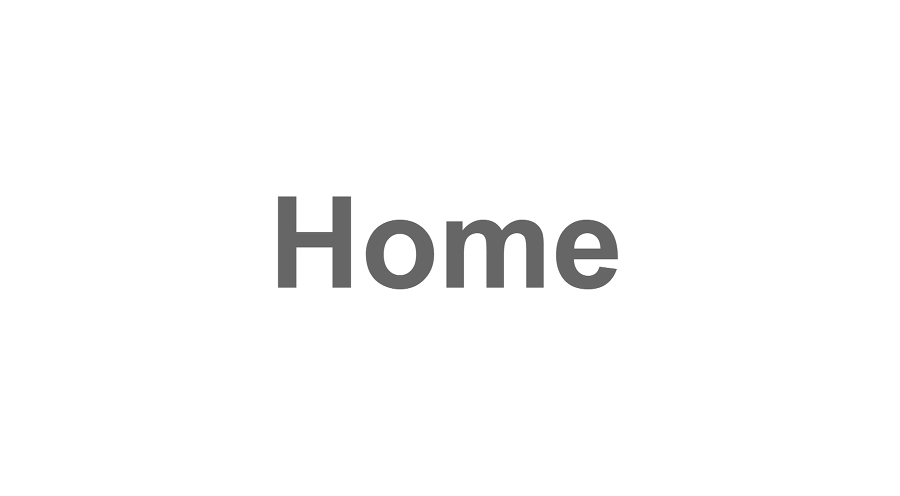Cero dependencias.
Incluye router, commonjs loader y view template engine.
Soporte para Chrome únicamente.
Formato de configuración para humanos (y Node).
Hecho para escribir archivos de configuración fácilmente.
No usa caracteres especiales (como corchetes) o convenciones raras (como sangrías).
App de Todos de ejemplo usando Vue.js, Express (con Passport) y CouchDB (con Nano).
Escribe TODOs rápido y fácil.
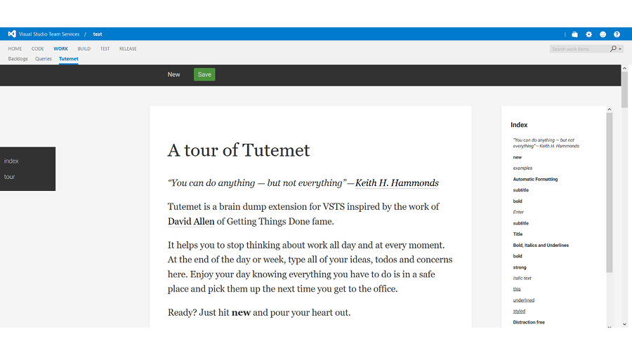Una extensión para hacer "Braindump" en Visual Studio Team Services.
Escribe todos tus TODOs, olvídate de ellos y disfruta el resto de día/fin de semana.
Soporta auto-formato de texto.
Buscador de issues para Jira.
Resultados inmediatos (usando fuzzy search) con cada caracter tecleado.
Soporte para comandos de voz.
Controles con el teclado para facilitar la navegación.
Una aplicación para escribir (procesador de texto).
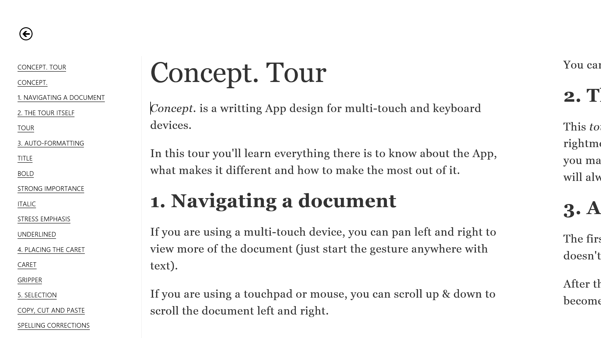Mejor app de productividad en App Latina 2013 de Intel.
Formato automático basado en el contexto (líneas que terminan sin puntuación se convierten en títulos, las primeras letras se capitalizan, etc).
Estilos por medio de escritura (disponible en todos los teclados, virtuales o físicos) y no por otra interfaz por separado (si se escribe ..texto en itálica.. se convierte en texto en itálica, etc).
Interfaz minimalista que soporta múltiples tamaños de ventanas y pantallas.
Diseñado tanto para teclados, como para pantalla táctiles (tamaño de texto más grande, navegación por gestos, etc).
Integración con Windows 8.1 (íconos secundarios, texto a voz, envío de documentos como el cuerpo de un email, compartir con otras apps, SkyDrive, etc).
Cambios visuales automáticos basados en la luz del ambiente (en cuartos oscuros, la combinación de colores se vuelve más oscura) para facilitar la legibilidad.
Portabilidad y fácil publicación (los documentos se guardan siempre como archivos HTML, permitiendo que se abran en cualquier navegador).
Mini-juegos experimentales con el teclado.
Jugado en más de 145 países.
En la lista de Editor's Picks del Chrome Webstore.
Unos 8000 jugadores activos semanales.
Extensión de Google Chrome para descargar imágenes con un clic o gestos.
Unos 55000 usuarios activos semanales.
Más de 3.5 millones de imágenes descargadas mensualmente
Usado en más de 183 países.
Una de las mejores extensiones de Chrome según Gizmodo y The Next Web.
Paquete de io.js para crear un servidor http para los archivos de una carpeta.
Inspirado en python -m SimpleHTTPServer.
Utiliza ES 2015 y requiere cero dependencias.
Paquete de io.js para borrar archivos y carpetas.
Utiliza ES 2015 y requiere cero dependencias.
Plugin de Sublime Text para resaltar el contorno de la línea actual.
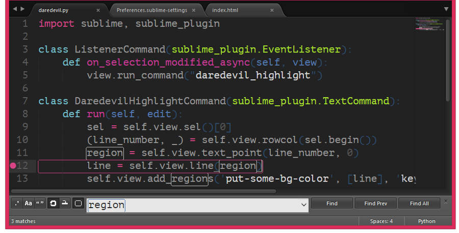Especialmente útil para resaltar búsquedas dentro de un archivo.
Un cliente de youtube diseñado para pcs.
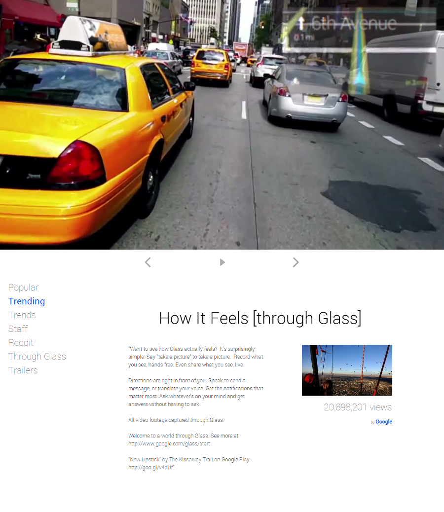Visitas de más de 70 países.
Videos en fullscreen desde el comienzo.
Múltiples feeds con los videos más populares del momento.
Interfaz minimalista que se adapta al tamaño de la pantalla.
Navegación y reproducción avanzada usando el teclado (flechas), gestos o el scroll (horizontal y vertical).
Buscador integrado al que se accesa sin usar el mouse.
Descubre las imágenes más populares en reddit.
Tan adictivo que la visita promedio dura más de 17 minutos.
Navegación con teclado, mouse o gestos.
Visitas de más de 73 diferentes países.
Disponible en el Chrome Webstore.
También disponible en el Blackberry App World (con la exclusiva designación Built for Blackberry).
Extensión de Google Chrome para descargar videos.
Más de 5.4 millones de videos descargados hasta la fecha.
Usado en más de 186 países.
Vence a la computadora en una competencia de tecleado rápido.
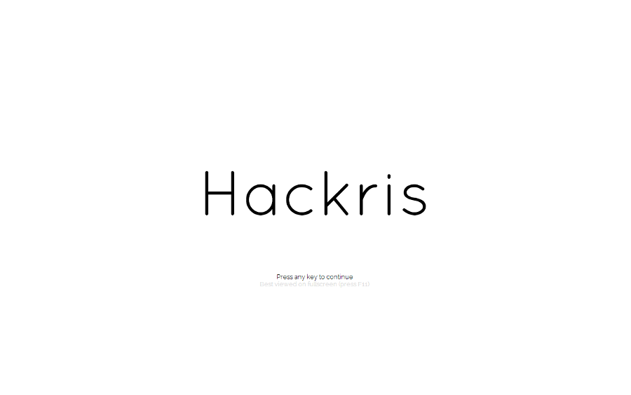Jugado en más de 36 países.
Mejora tu habilidad de tecleo practicando en contra de un robot.
Temas para los editores de texto: Sublime Text, Textmate y Chrome DevTools.

Ha sido utilizado por más de 3200 programadores con Sublime Text.
35+ forks en Github.
Extensión de Google Chrome para cambiar entre pestañas mediante screenshots de las páginas.
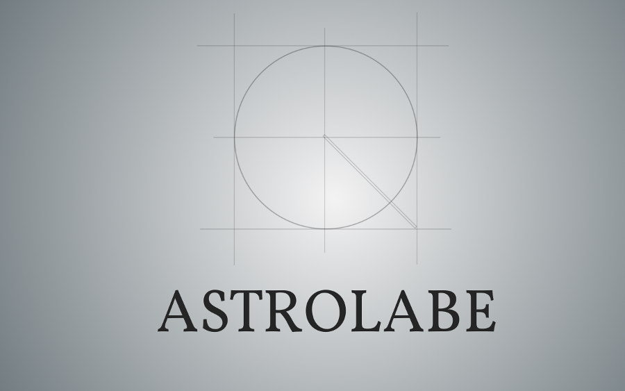Ve todas las páginas que tienes abiertas en una sola pantalla.
Para ir a una pestaña específica, simplemente haz clic en la vista previa que la muestra.
Extensión de Google Chrome o librería de Javascript que crea un minimap para navegar más fácilmente.
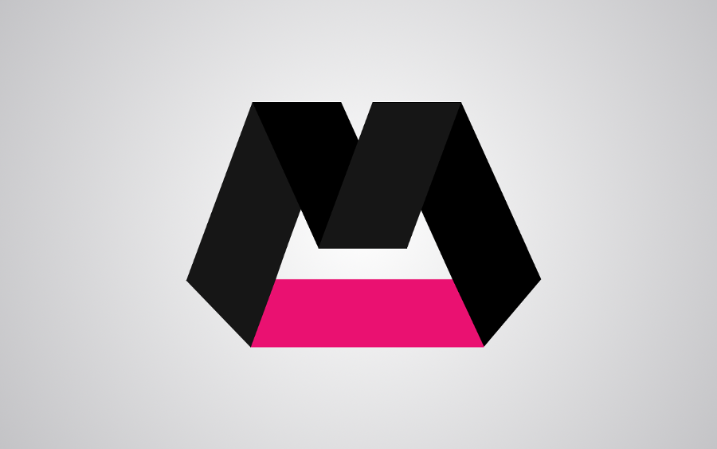Pasa el mouse sobre el minimap (copia en miniatura de la página) y el navegador irá directamente a ese punto.
Más rápido que el scroll con el touchpad o la rueda del mouse, más preciso que la barra de scroll.
Extensión de Google Chrome para recibir notificaciones de gmail.
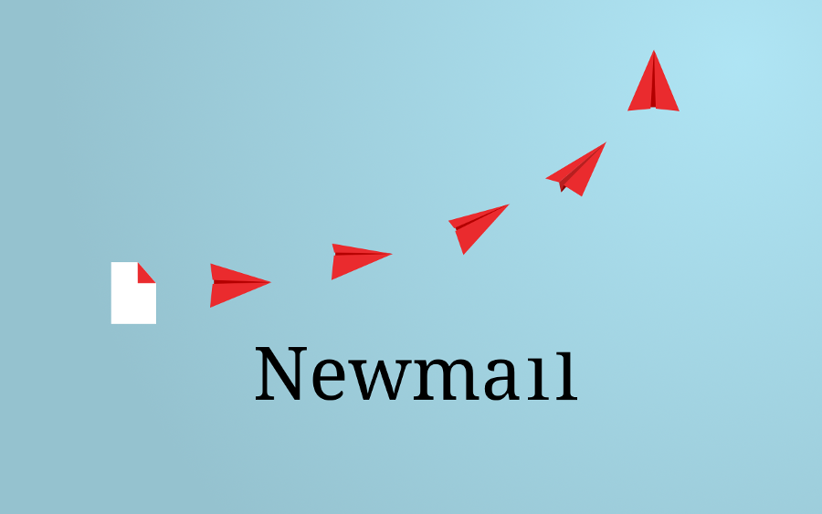Notifica de nuevos correos de la forma menos molesta.
Si desde la última vez que entraste a gmail ha llegado algún correo, el ícono es rojo. Si no, es blanco.
Sin interrupciones o conteos de miles de correos sin leer.
Ha sido usado en más de 77 países.
Extensión de Google Chrome para auto-expander fotos, videos o conversaciones en Twitter.
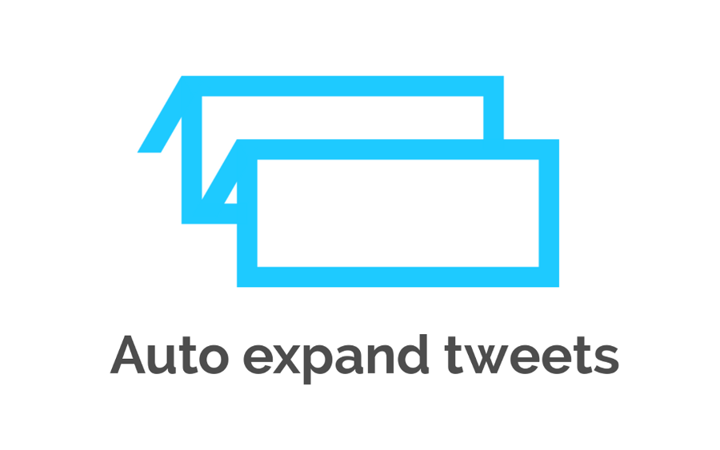Ha sido usado en más de 73 países.
Fotos, videos y conversaciones (si las respuestas incluyen alguna del autor original del tweet) aparecen sin necesidad de ningún clic.
Disponible en el Chrome Webstore (5/5 estrellas). Descontinuado (cambios en la interfaz de twitter hicieron a la extensión innecesaria).
Extensión de Google Chrome para ahorrar energía.
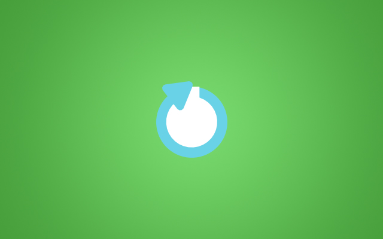Cerca de 140 usuarios activos.
Suspende y pon el computador en modo de ahorro de energía desde el navegador (Windows y Mac).
Muestra la cantidad de tiempo que dejaste el computador prendido, sin usar y desperdiciando energía.
Extensión de Google Chrome para bloquear Adsense y Google Analytics.
Cerca de 180 usuarios activos.
Solo bloquea una lista (negra) personalizada de dominios (y opcionalmente extensiones).
Especialmente útil para bloquearse uno mismo de sus propias páginas (para no contarse en las estadísticas de visitas o hacer clic en la publicidad por error).
Inspirada en la tipografía de Star Wars.
Un Grid de CSS con número de columnas variable en la forma de una librería de Javascript.
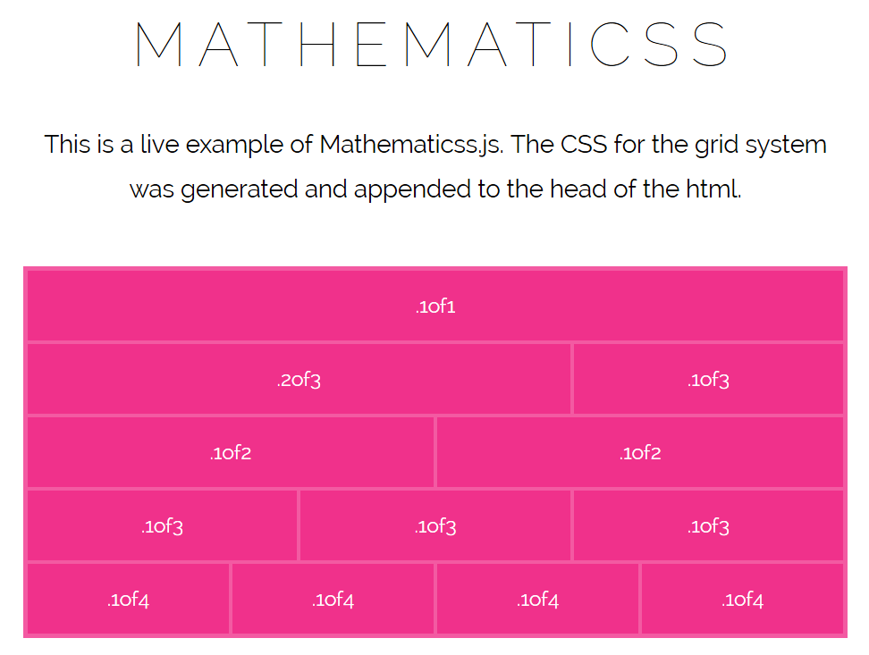730 bytes en gzip (2.54kb sin minificar o comprimir).
Micro framework MVC (de un solo archivo) para PHP.
El framework MVC de PHP más ligero y rápido del mercado (benchmarks).
Guarda automáticamente todos los valores de console.log en variables para facilitar la depuración.
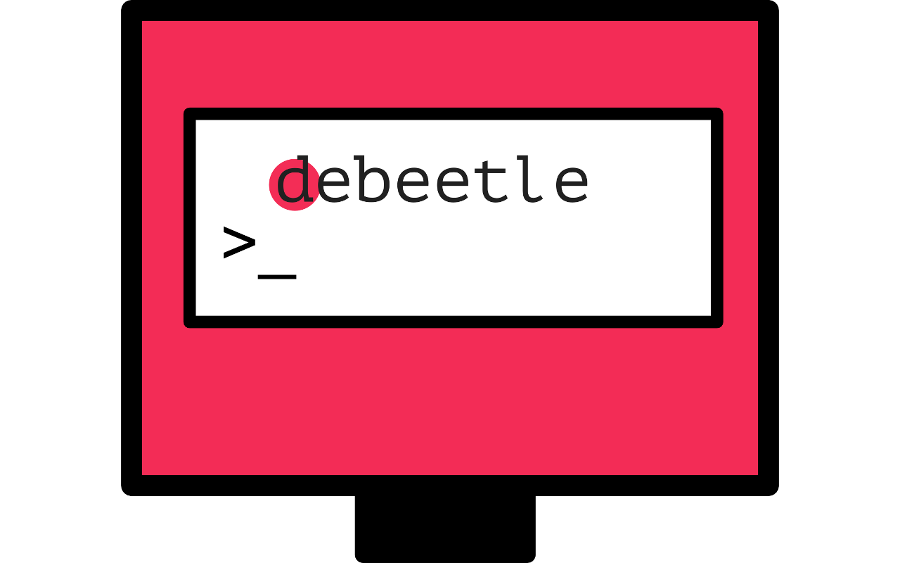Plugin de Javascript que genera un Carrusel circular (infinito).
Sin dependencias y estilos CSS.
Solo 485 bytes en gzip (2.1kb sin minificar o comprimir).
Experimento que visualiza los gastos entre hombres y mujeres.
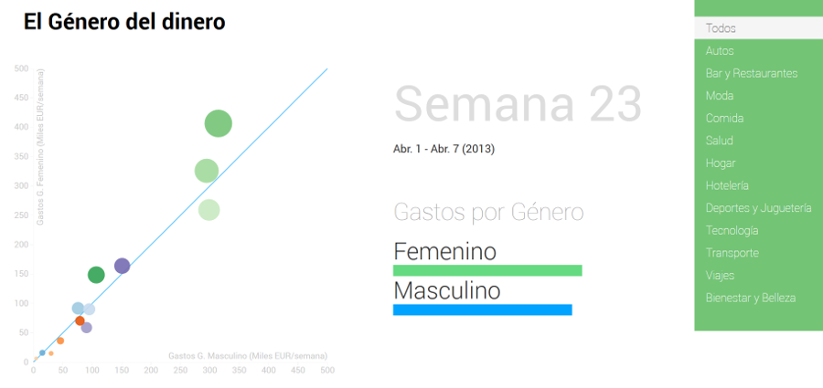Motion chart que compara los gastos entre hombres y mujeres.
Plugin de Wordpress para aplicar el CSS del tema al editor wysiwyg de los posts (tinymce).
Plugin anti-spam para Wordpress.
Demo en tiempo real que replica lo que se ve en 1 dispositivo en otro(s), usando node.js, socket.io y three.js.
Script de Python que automáticamente sincroniza un fork con su repositorio padre.
Librería para implementar contadores para App Engine (Python).
Ejemplo de como generar automáticamente la página de github con cada commit usando Travis CI.
Experimentos usando gmail actions.
Implementado usando únicamente CSS.